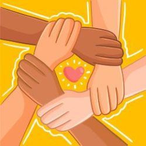
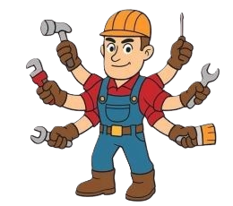

Association loi 1901 déclarée en prefecture en novembre 2021. Numero: W423014341
Association loi 1901 déclarée en prefecture en novembre 2021. Numero: W423014341
Boutique Réparation Insertion Collectif

Un tiers lieu est un espace ouvert à tous,
où les individus peuvent se réunir pour travailler,
s'approprier des savoirs et/ou des compétences.
Pour se rencontrer ou simplement échanger de façon informelle.
C'est un lieu accueillant une maison commune où l'on participe et crée du lien social.
L'association oeuvre pour le partage de savoirs au service des habitants autour de l'économie
circulaire.
Ce commun soucieux de l'environnement, crée des emplois adaptés et valorise des objets.
Elle s'inscrit dans une démarche Responsable Sociétale des entreprises. (RSE)
L'Agence De L'environnement et de la Maitrise de L'Environnement (ADEME)
définit l'économie circulaire comme un systeme économique d'échange
et de production. Qui, à tous les stade du cycle de vie des produits
vise à augmenter l'efficacité de l'utilisation des ressources
et à diminuer l'impact sur l'envirronement,
tout en dévellopant le bien être des individus.

Nos Evénements
Nos Activités
La BRIC sans argent est un espace de don collaboratif.
Elle permet de donner une seconde vie à des petit objets
que l'on peut donner ou récuperer gratuitement
L'association promeut l'économie du don
qui est à la fois sociale, solidaire, circulaire et collaborative.
Les catégorie d'objets que l'on récuperer:
Vaisselle, Petit electroménagers, Livre /CD, Décoration,
puériculture.

La conciergerie Solidaire
La conciergerie propose un service
à destination des habitants comme
Débarrasser les encombrants a la déchetterie,
avec un tarifs adapté, vidage d'appartement et
petit travaux.
Un espace où les professionnels et participants
peuvent amener des petit electroménagers, bricoler, réparer ou fabriquer,
grâce aux outils et machines mis a leur disposition.
Des ateliers pratique pour apprendre à faire soi-même
dans une démarche d'autonomie et de partage
pour en savoir plus voir avec la BRIC.

Differente activité de la bric
Nettoyage d'appartement
avec des structure extérieur